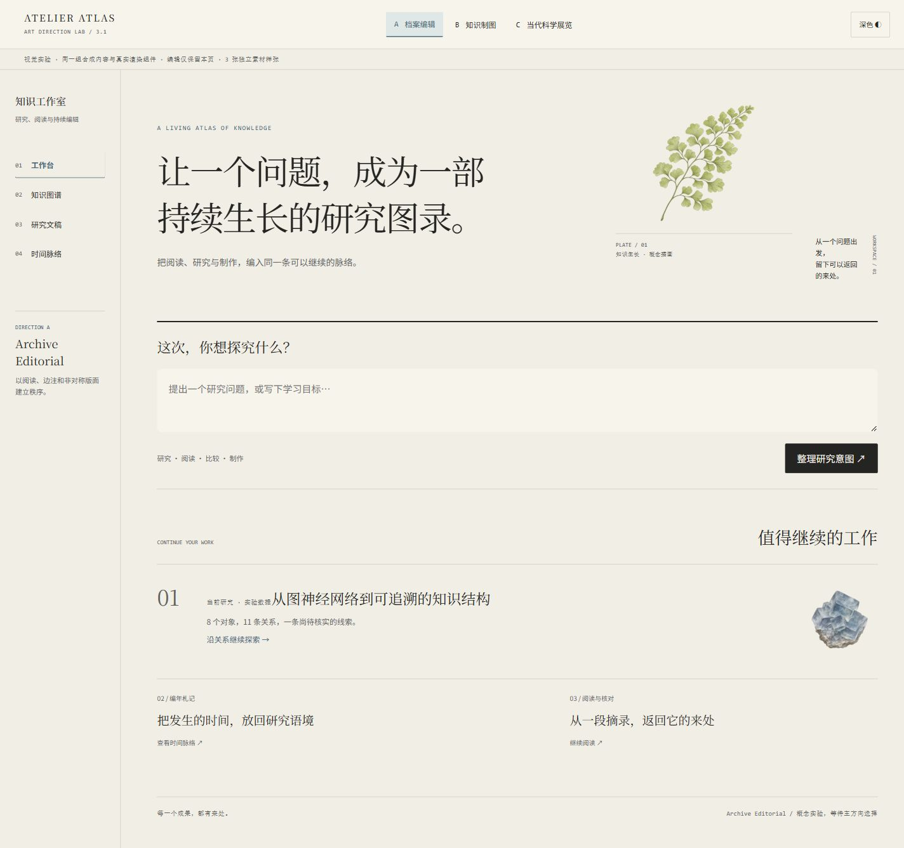
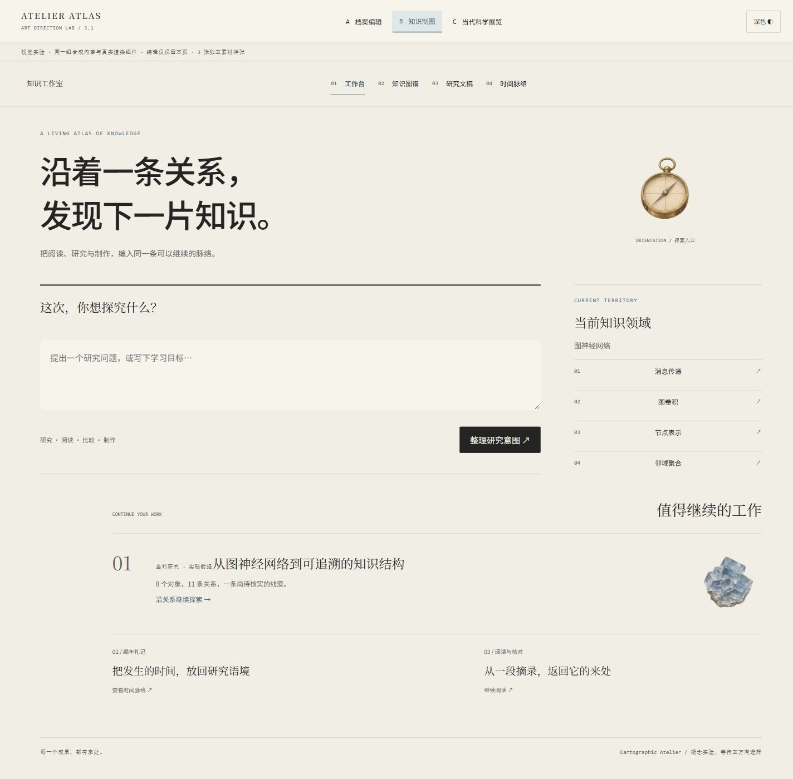
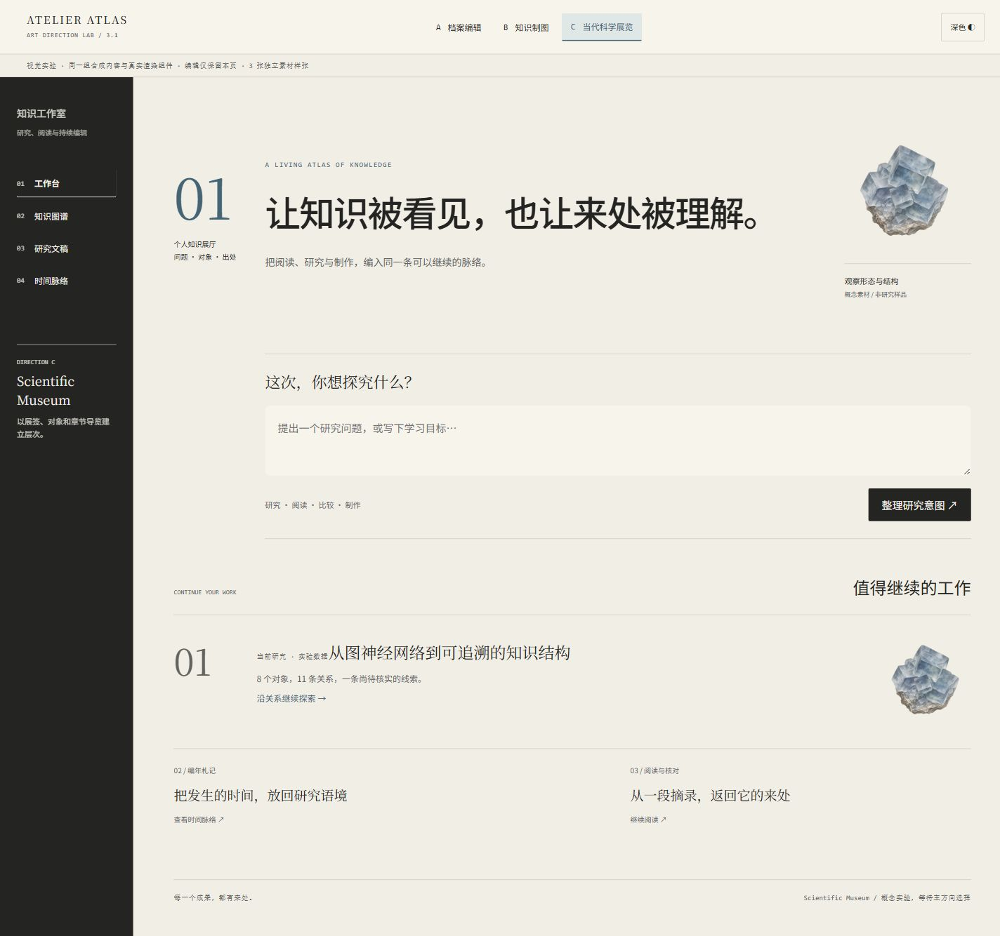

历史实验记录：用户已选择A，正式品牌、20素材与页面迁移见 当前实际页面效果。本实验服务已归档，以下48张截图保留原比较数据。
ATELIER ATLAS / ART DIRECTION LAB / V3.1
同一份知识，三种组织方式。
参考案例用于学习空间、排版、科学表达和展示秩序。这里的三套方向由 Atelier Atlas 自己的内容重新组织，不对应任何一个参考品牌的页面主题。
本页为真实运行截图的静态对照。每套均包含首页、图谱、研究文稿和时间线，支持桌面/手机、深浅主题，共48张主截图。交互请打开各方向的实验页；数据均为合成样例，本页保存不会写入正式工作区。
DIRECTION A档案编辑
Archive Editorial正文与边注为主，素材沿版面边缘出现，适合作为长期阅读与研究的品牌主方向。
操作这套实验页 →
档案编辑 · 点击图片查看原尺寸DIRECTION B知识制图
Cartographic Atelier横向范围导航、路径索引和宽画布，强调在对象之间探索。
操作这套实验页 →
知识制图 · 点击图片查看原尺寸DIRECTION C当代科学展览
Contemporary Scientific Museum大编号、展签与对象形成分区，强调知识对象和材料的展示秩序。
操作这套实验页 →
当代科学展览 · 点击图片查看原尺寸 当前建议：以 A「档案编辑」为主方向；图谱吸收 B 的空间组织，来源与证据吸收 C 的展示层级。它们仍共用一套字体、材质、控件和对象身份，具体取舍由主方向决定。
SMALL, INDEPENDENT, REUSABLE
先用三张样张检验风格。
每张均独立生成，保留透明PNG源文件，并输出192 / 384 / 768px透明WebP。下方为同一文件在浅色和深色背景上的表现。它们属于概念装饰，不代表真实研究材料；尚未标记为正式批次验收通过。
植物枝叶 · 独立透明素材 · 提示词矿物 · 独立透明素材 · 提示词测绘罗盘 · 独立透明素材 · 提示词